デバイスのソフトウェア開発における手順や工数削減手法を、LTEモデム付きプロトタイプ向けデバイス "Wio LTE" とSORACOM Harvest や SORACOM Lagoon、そして SORACOM ならではの機能を活用した IoT システム作りを学んでいただけます。
IoT システム構築に不可欠なデバイス開発の現場と課題、そして SORACOM が提供するサービスを活用することによるデバイス開発におけるメリットを、セミナーだけでなくハンズオンを通じて学ぶことができる内容となっています。
本ハンズオンで得られること
構成
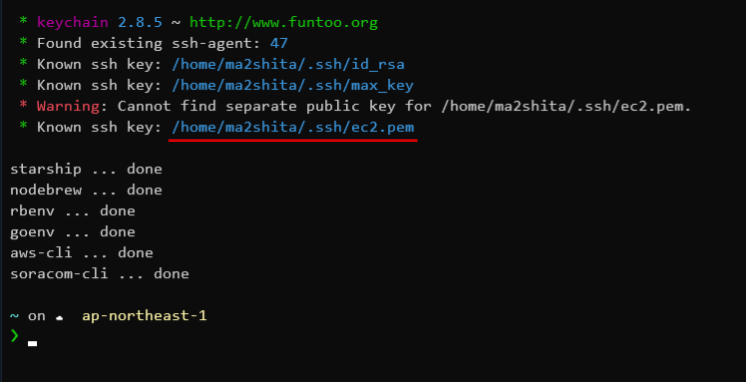
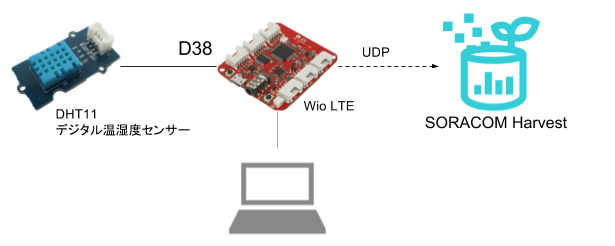
ハンズオンの進め方
右下の［NEXT］で進んでいってね。
aaaaa
質問！！どこから来ましたか？
セミナー当日にご持参ください
- パソコン / 1台
※タブレット等の下記に当てはまらないPCでの受講は自己責任としております - Wi-Fi 接続可能
- USB Type-A ポートが最低1つ以上あり、利用可能なこと
- 電力供給が1A以上であること
※USB 3.0対応していれば概ね問題ありません - USB Type-C のみの機種につきましては、Type-A への変換アダプタのご用意をお願いいたします
- ブラウザ: Google Chrome がインストールされている事
- SORACOM アカウント登録に必要なもの / 1式
- 有効なクレジットカード
- その場で確認可能なメールアドレス
SORACOM アカウントの作成
SORACOM Webコンソール ( https://console.soracom.io/#/signup) にアクセスします。
使用する SIM の種類を選択します。日本向けの SORACOM Air SIM を利用する場合は、カバレッジタイプ Japan を選択します。
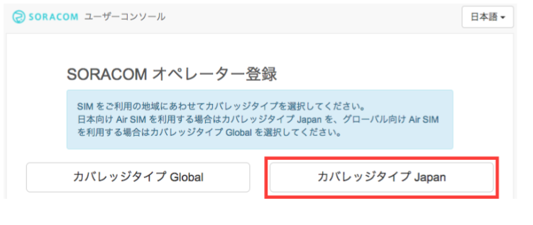
「アカウント作成」画面が表示されますのでメールアドレスおよびパスワードを入力します。 また、契約者が個人であるか法人であるかを選び、法人の場合はさらに契約者の情報を入力します。 最後に規約に同意するためのチェックボックスを入れ、「アカウントを作成」ボタンを押します。
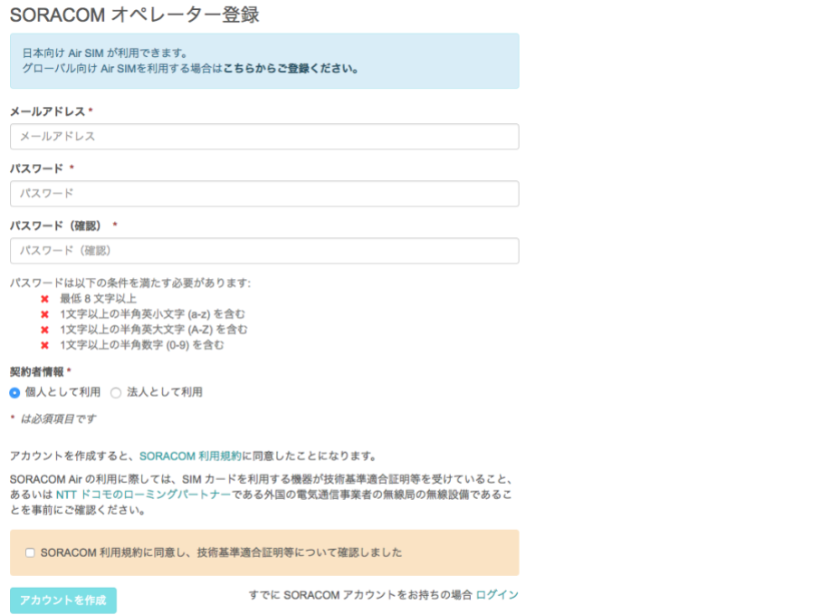
複数人でAir SIMの管理を行う場合は、事前にメーリングリストのアドレスを取得するなど、共有のメールアドレスをご利用ください。 下記の画面が表示されるので、メールを確認してください。
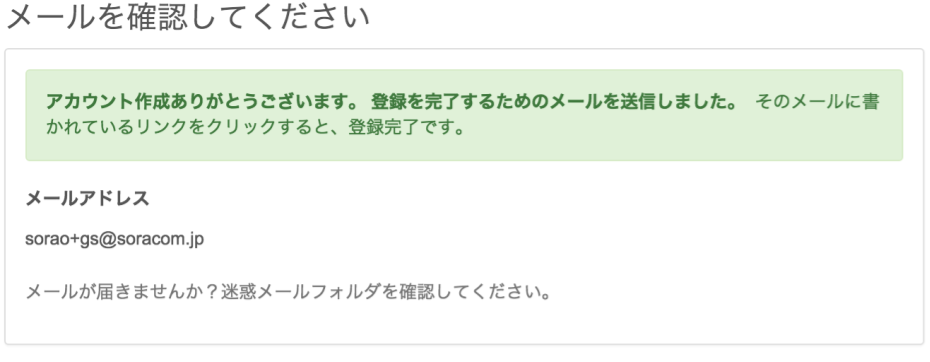
メールが届いたらリンクをクリックしてください。
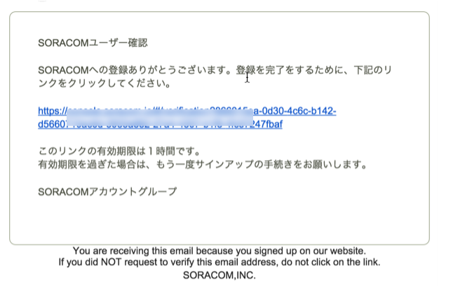
自動的にログイン画面に遷移しますので、メールアドレスとパスワードを入力してログインしてください。
ユーザーコンソールへのログイン
ログイン画面が表示されるので、アカウント作成時に登録したメールアドレスとパスワードを入力し、 [ログイン] ボタンをクリックしてください。(ログイン画面が表示されない場合はブラウザで https://console.soracom.io にアクセスします。)
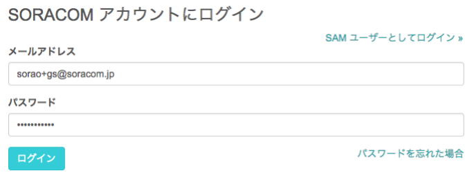
以下のような「SIM管理」画面が表示されたらログイン完了です。引き続き、支払情報の設定に進みましょう！ 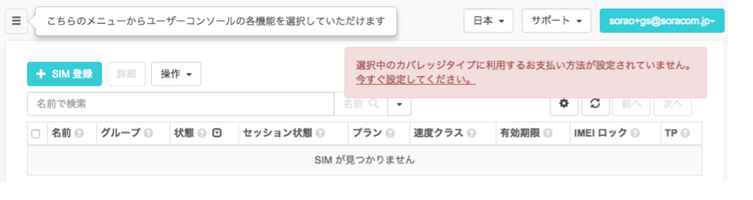
支払情報の設定
通信料の支払い方法はクレジットカードになります。クレジットカードの情報を登録するには、メイン画面上部のユーザー名から[お支払い方法設定]を開きます。
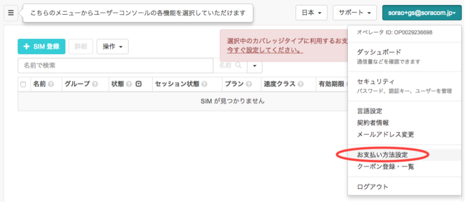
お支払方法で各情報を入力し、支払い方法を登録します。
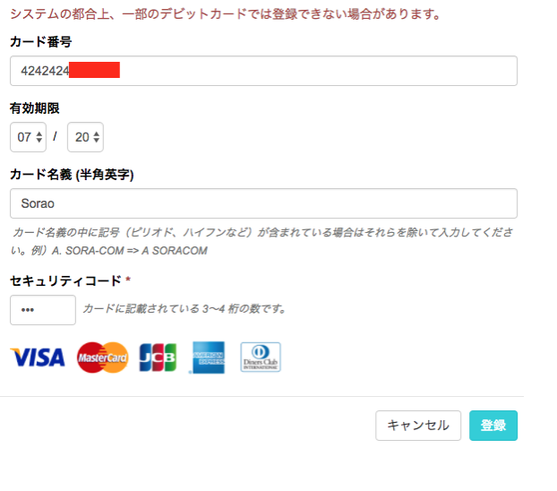
ユーザーコンソールでの Air SIM の登録
ユーザーコンソールにログインして、Air SIM の登録を行います。左上の [SIM登録] ボタンをクリックします。
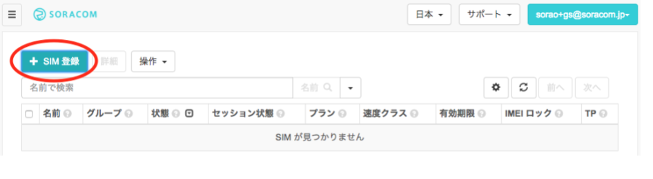
「SIM登録」画面で、Air SIM の台紙の裏面に貼ってある IMSI と PASSCODE を入力してください。
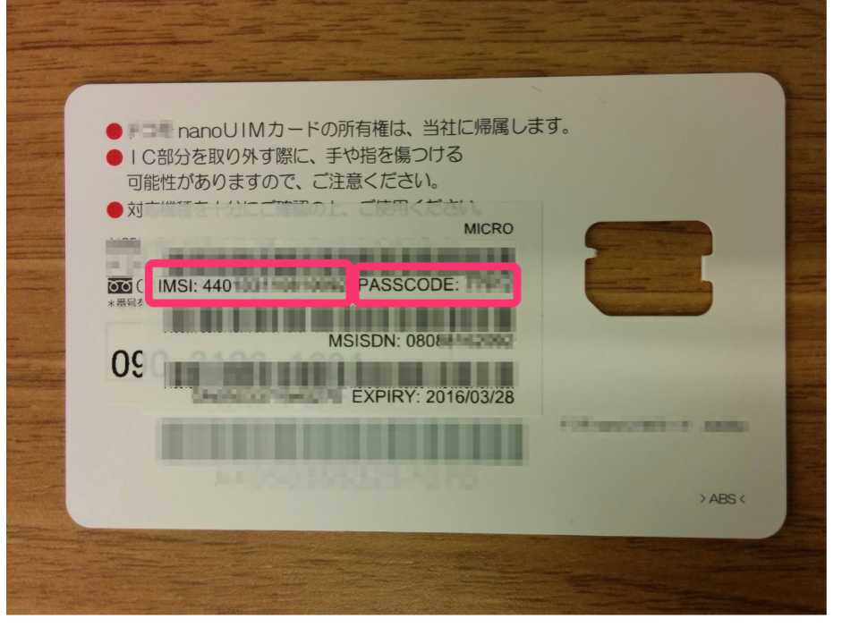
名前、グループは空欄のままでも構いません。 「技術基準適合証明等について確認しました」チェックボックスを付けてください。 [登録] を押して SIM 登録を完了してください。（複数の Air SIM を続けて登録することも可能です。）
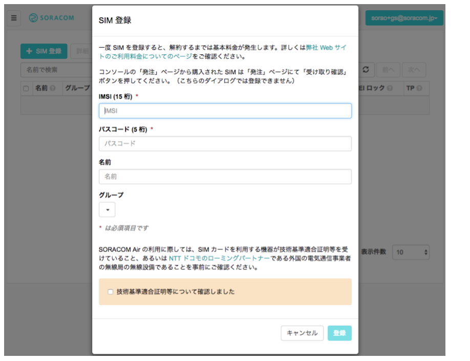
Air SIM を登録した直後の状態は「準備完了」と表示され、通信可能な状態になっています。ただし、まだセッションは確立されていないので、セッション状態は「オフライン」になっていることを確認してください。
SORACOMではSIMの登録や「使用開始」「休止」「解約」といったモバイル通信の状態の更新をユーザー自身がユーザーコンソールを使用して、実施することが可能です。
Wio LTE とは？
Wio LTE は Seeed Studio が開発・販売しているマイコンモジュールです
Grove コネクタと STM32F4 マイコン、LTE Cat.1 モジュールが搭載されており、 Arduino IDE で素早くプロトタイピングができます
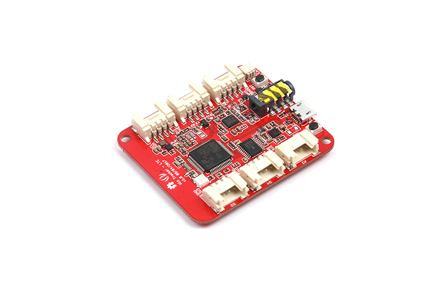
Wio LTE 各部の名称
※この項は知識として知っておいてください
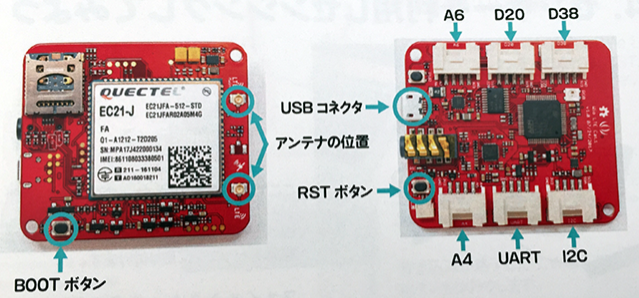
作業: アンテナの取り付け
アンテナの取り付けはかなり力を要しますが、無理をしないようお願いいたします。
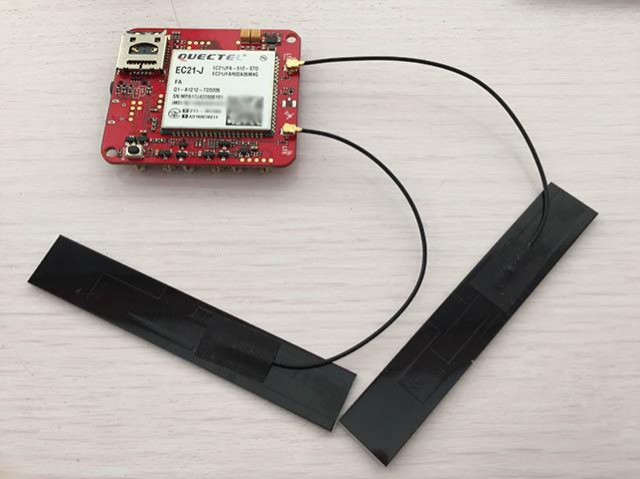
作業: SIM の取り付け方、外し方
取付け
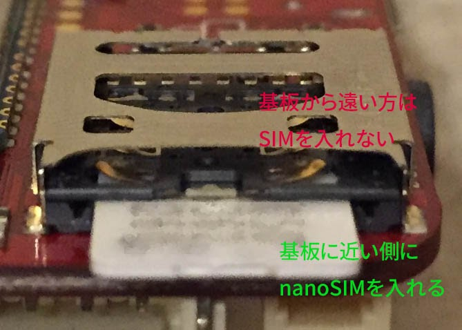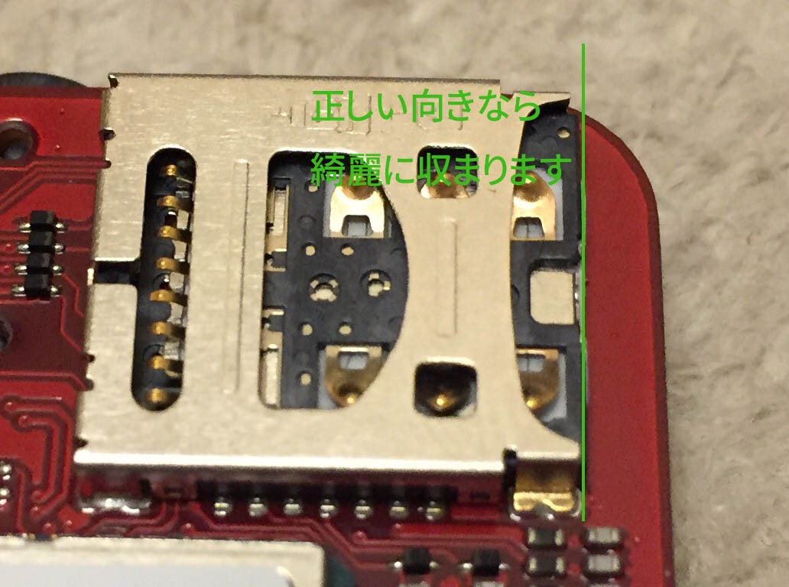
取り外し
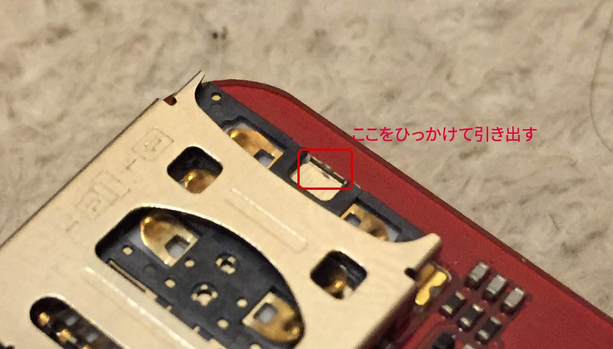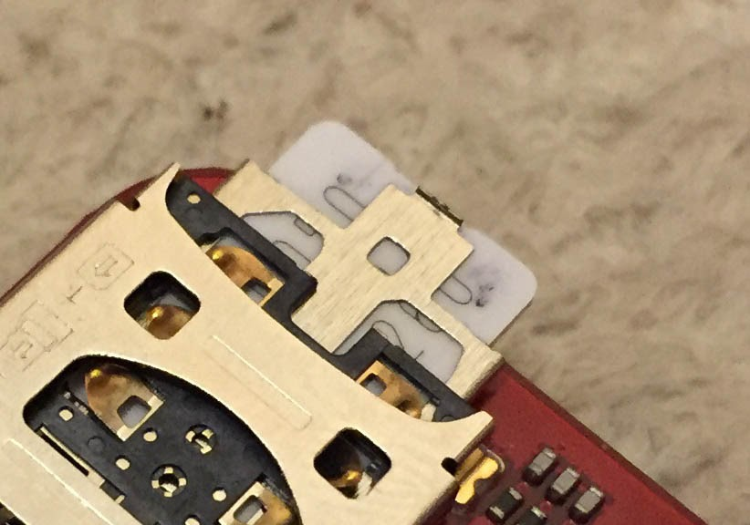
作業: 温湿度センサーの取り付け
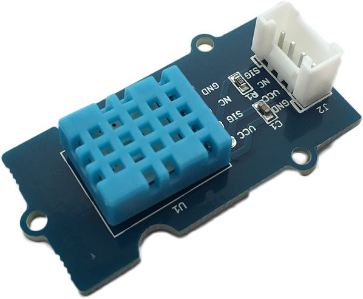温度センサー (DHT11) 付属の 「Grove コネクタケーブル」を使って
Wio LTE の「D38」へ取り付けてください
作業: 確認
全ての作業を終えると、以下のようになります
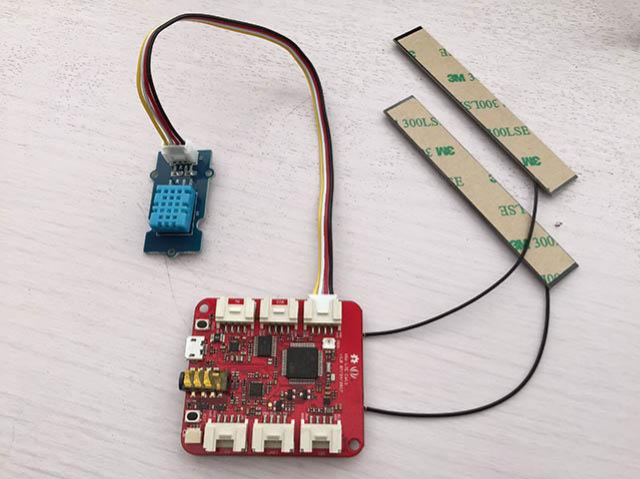
Wio LTE の電源ON/OFFの方法
※この項は知識として知っておいてください
Wio LTE には電源スイッチがありませんので、下記作業で ON / OFF してください
電源 ONmicroUSB ケーブルを Wio LTE の microUSB ポートに接続すると自動的にONになります 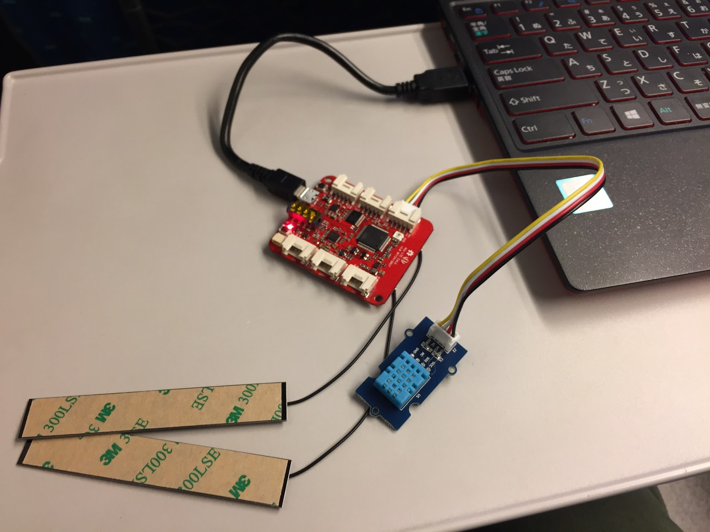 | 電源OFFmicroUSB ケーブルを抜きます いきなり抜いて OK です ※シャットダウン処理は不要です |
クラウド側のシステムを用意せず、まずデバイスとセルラー通信の稼働を確認するために、SORACOM Harvest による可視化を行います
構築対象システムを減少することができるため、コンポーネントの動作確認を一つづつ確認していく事ができることを学びます
(目標: 20分)
構成のゴール
作業手順の概要
- Wio LTE の電源を OFF
- SORACOM Harvest の設定
- Wio LTE の電源を ON
- データの確認
ハンズオン
作業: Wio LTE の電源を OFF
Wio LTE の microUSB ケーブルを抜き、電源を OFF にしてください
※いきなり抜いて OK です
※すでに OFF になっている場合は、次の作業へ進んでください
作業: SORACOM Harvest の設定
- SORACOM Webコンソール ( https://console.soracom.io ) で 左上[Menu] > [SIM グループ]
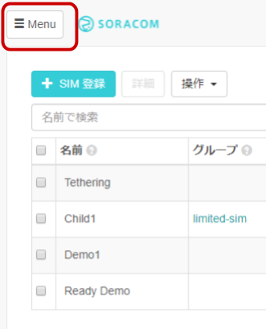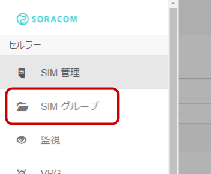
- [追加] で、SIMグループを作成します
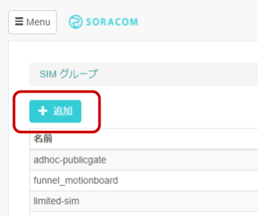
グループ名 harvest もしくは 任意 でかまいません
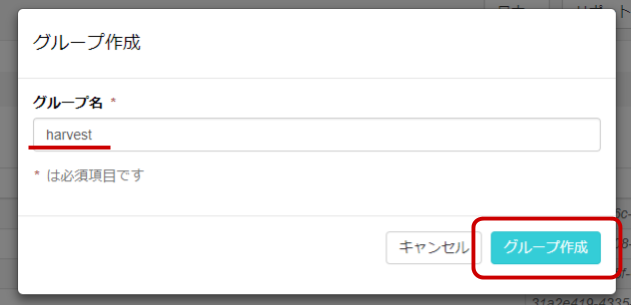 - 先ほど作成した SIMグループ をクリックすると、グループの詳細が開きます
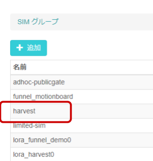 - SIM グループの詳細で SORACOM Harvest の設定 開き、SORACOM Harvest を ON にし、
保存をクリックします
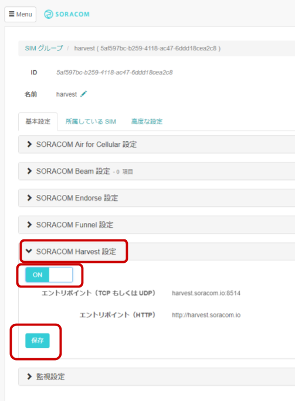 - 先ほど設定した SIM グループへ、 Wio LTE に挿している SIM を所属させます
左上[Menu] > [SIM 管理]
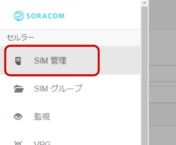
- Wio LTE に取り付けている SIM を選択 > [操作] > [所属グループ変更]
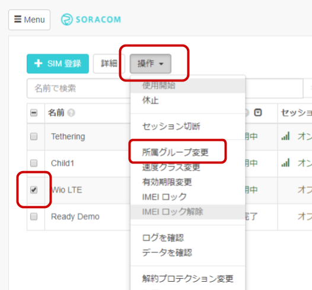 - 先ほど作成した SIMグループ に所属させる
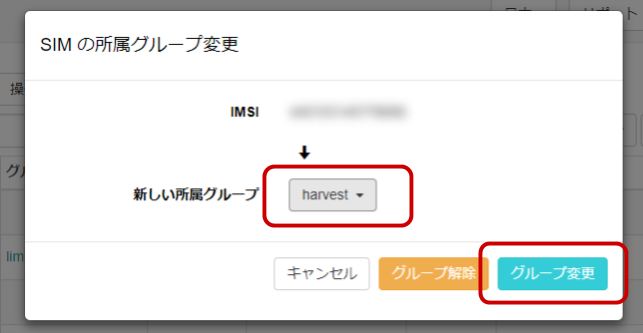
以下のように SIM がさきほど登録した SIMグループ になっていることが確認できます
この状態で "Wio LTE" と書かれている SIM は SORACOM Harvest が使用可能な状態になりました
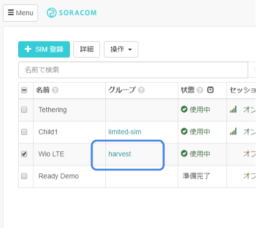
作業: Wio LTE の電源を ON にする
Wio LTE と PC を microUSB ケーブルで接続してください
Wio LTE に電源が供給されると Wio LTE にあらかじめ書き込まれたプログラムが開始されます
※お配りした Wio LTE には「D38 に接続されたデジタル温湿度センサーを SORACOM Harvest に送信する」プログラムが書き込まれています
このプログラムの詳細は付録にて紹介しています
作業: データの確認
送信されたデータを SORACOM Harvest で確認してみましょう
- 左上[Menu] > [SIM 管理]
- Wio LTE に取り付けている SIM を SORACOM Webコンソール上で選択し
[操作] > [データを表示]
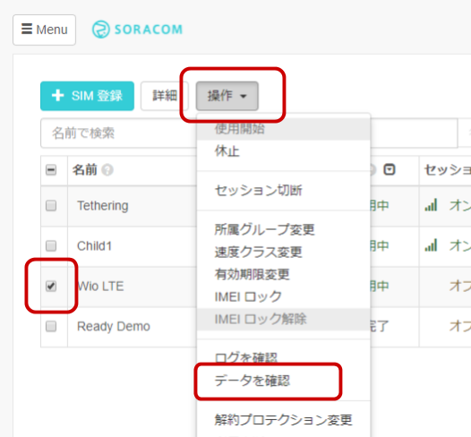
以下のように、温度・湿度のデータが、それぞれ temp humi として SORACOM Harvest 上で
可視化されています
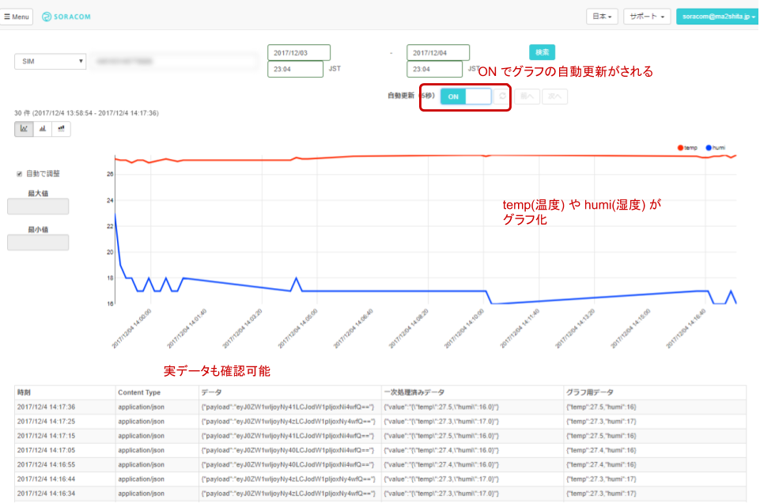.
※自動更新を ON にすることで、半リアルタイムにグラフが描画されます
作業: Wio LTE の電源を OFF
Wio LTE の microUSB ケーブルを抜き、電源を OFF にしてください
※いきなり抜いて OK です
SORACOM Harvest の見方、機能
※この項は知識として知っておいてください
データ蓄積・収集・可視化ツールである SORACOM Harvest の機能をご紹介します
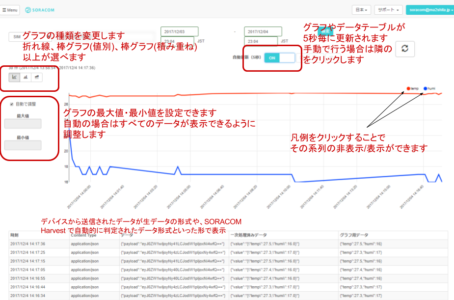
本章のおさらい
※この項は知識として知っておいてください
ここまでの操作で、下記構成が実現されました
トラブルシュート
Wio LTE の電源が ON になっても SORACOM Harvest でデータが表示されない
考えられる原因１: 対象の SIM に対して SORACOM Harvest が有効化されていない場合があります
確認: SIM に対するエラーが発生していないか、ログを確認することで状況がわかる場合があります
SIM を選択 > [操作] > [ログを確認]
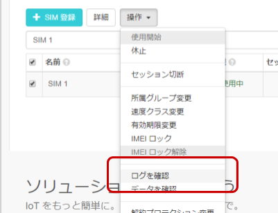
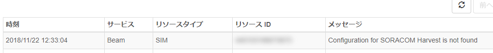
上記のように「SORACOM Harvest の設定がされていない」といった形で原因特定が可能です
対策: SIM が SORACOM Harvest が有効化されているグループに所属しているか確認します
考えられる原因２: センサーが正しく取り付けられていない場合があります
確認: 温度センサー (DHT11) が Wio LTE の「D38」に接続されているか確認します。Wio LTE には 6つのGroveコネクタがありますが、D38と書かれているのは６つのうち１つだけです
対策: 温度センサーは「D38」へ取り付けてください
SORACOM Harvest は SORACOM アカウント内でデバイスからのデータをいち早く確認するためのツールですが、ビジネスで活用しようとした場合はデータの活用が必須となります。
具体的には「データの共有」と「条件によるアラート」です。
SORACOM Lagoon はその二つを備えており、SORACOM Harvest に蓄積されたデータを即座に活用することが可能です。
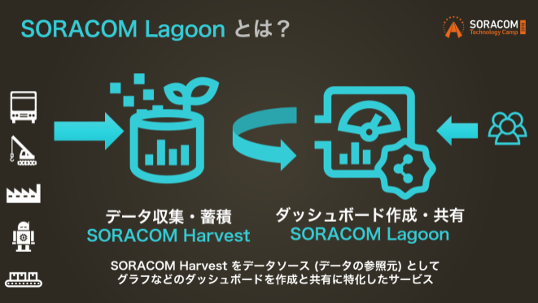
SORACOM Lagoon について
※この項は知識として知っておいてください
SORACOM Lagoon はダッシュボードを作成し、"SORACOM Lagoon ユーザー" と共有できるサービスです。SORACOM Lagoon ユーザーは SORACOM アカウントを持っていれば自由に作成・管理可能で、だれと共有するかを決めることができます。
その他、条件を設定し、Email や Slack、LINEといったメッセージングツールへのアラート送信も可能です。
ハンズオン
SORACOM Lagoon (Free プラン) を有効化する
- SORACOM Webコンソール ( https://console.soracom.io ) で 左上[Menu] > [データ収集・蓄積・可視化] > SORACOM Lagoon をクリック
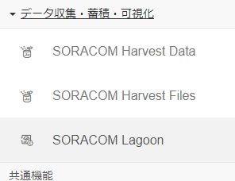 - [SORACOM Lagoon の利用を開始する] をクリック

- Free の [選択する] をクリックしてチェックが付いたのを確認したら [続行する] をクリック
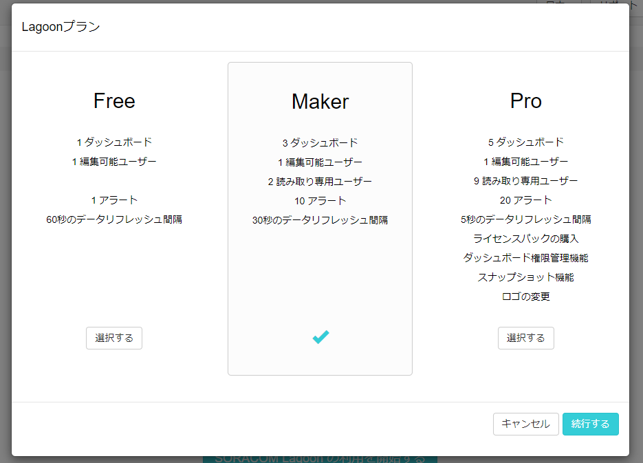 - SORACOM Lagoon における管理者のパスワードを設定します。
全てが✔になるようなパスワードを設定したら [利用開始] をクリック。
注: このパスワードは SORACOM ユーザコンソールにログインする時とは別のパスワードを推奨します。
- パスワードの登録が完了すると、SORACOM ユーザコンソールのルートアカウント(一番最初に登録したときのユーザ)のメールアドレスをIDとして、先ほどのパスワードを設定した「SORACOM Lagoon ユーザ」が作成されます。
[SORACOM Lagoon console にアクセス] をクリックします。
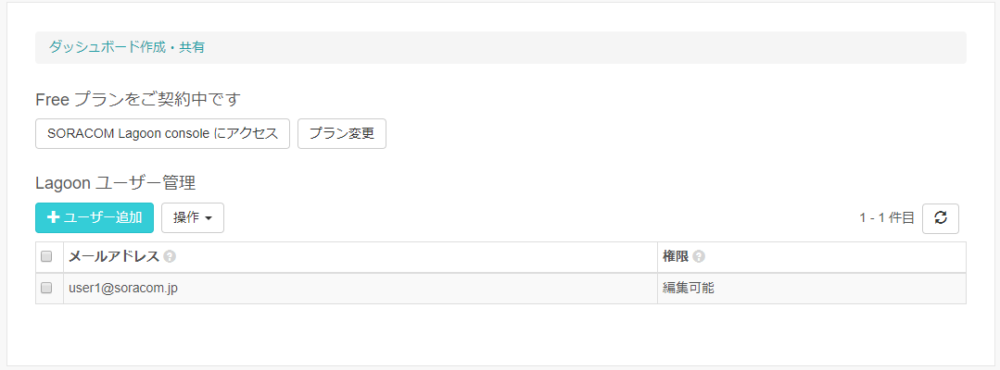
以上で SORACOM Lagoon の有効化は完了です。
SORACOM Lagoon にログインする
- 「SORACOM Lagoon ユーザ」の ID とパスワードでログインします。
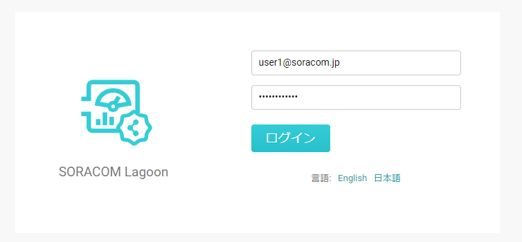 - SORACOM Lagoon ダッシュボードが表示されます。
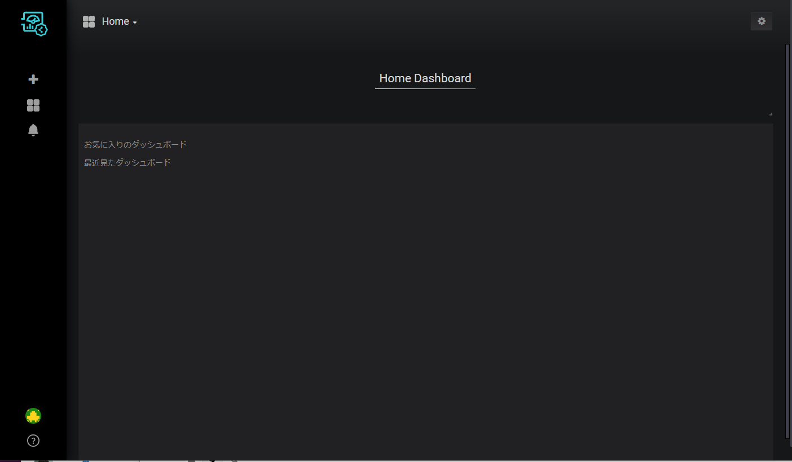
これまでのおさらいと、今後の作業
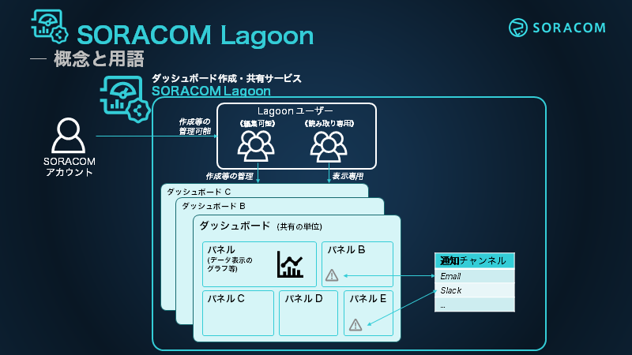
ここまでで、SORACOM アカウントから SORACOM Lagoon の有効化と、Lagoon ユーザの作成までをおこなってきました。
これ以降は「ダッシュボード」と、その中でデータを実際に表示する「パネル」を作っていきます。
ダッシュボードを作成し「Clock パネル」を配置してみる
- 左の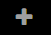にカーソルを合わせると表示される [ダッシュボード] をクリック
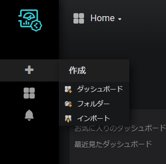 - これが新しい「パネル作成」の画面です。[Clock] をクリック。
「時計」が表示されるようになりました。このパネルはウィンドウのようにサイズや表示位置の変更が可能です。
また、最後には状態を保存するために右上の [ダッシュボードを保存] をクリックします。名前を適宜付けて保存してください。
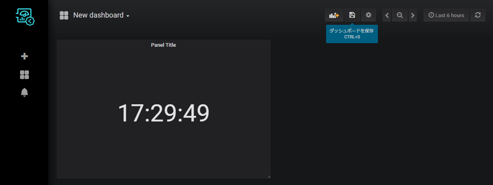
※この時計は SORACOM Lagoon を表示したPCやスマホの時計をそのまま表示しています - ダッシュボードが保存されたか確認してみます。左メニューのにカーソル合わせると表示される [管理] をクリックします。すると、先ほどのダッシュボードがリストに表示されています。このダッシュボード (例だと "New dashboard Copy") をクリックすると、ダッシュボードの内容が再度表示されます。
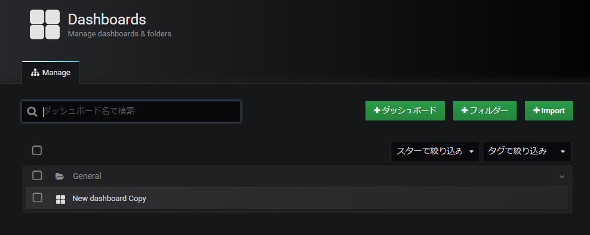
SORACOM Lagoon のダッシュボード作成およびパネルの追加はここまでの手順を繰り返すことになります。
データを表示してみる (折れ線グラフ)
- ダッシュボードの内容を表示した後、右上の [パネルの追加] をクリックします。
その中に表示されている [Graph] をクリック。
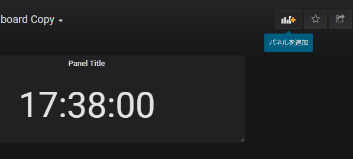 - [Panel Title] をクリックして表示される [編集] をクリック

- 表示するデータの設定方法：
メトリックタブの中でデータ表示したい SIM の IMSI (もしくは SIM の "名前" が設定されていれば名前) を選択 - 表示するデータの範囲と更新期間の変更方法：
右上のをクリック
自動的に更新したい場合 → 自動更新を選択して [適用]
表示期間を変更したい場合 → 例えば [過去15分間] をクリック - パネルの編集を終了する場合は右上のをクリック
ダッシュボードに戻ると以下のように折れ線グラフが追加されています。最後にダッシュボードの保存を行います。
チャレンジ: SORACOM Image Panel
画像を背景にして、重ね合わせをするパネル "SORACOM Image Panel" に挑戦してみてください。
- 右上の [パネルの追加] から、SORACOM Image Panel を選択します (クロックやグラフの時と同じ手順です）
(注: SORACOM Dynamic Image Panel とは異なります) - メトリックタブで値を選択
今回は Wio LTEが出力している温度 "temp" を対象とします - 画像タブで背景画像の URL に以下を入力、また [縦横比を保つ] にチェックを付けます
https://ma2shita.s3.amazonaws.com/images/house.png - 同じ画像タブの中のをクリック
メトリックの名前: "A-temp"
X/Y座標: 30 40
幅／高さ: 100 100
しきい値: 27 32
とします。
これで、温度の値に応じて画像が変化します。(しきい値を変更してみて変化を見てください)
この章のゴール
一般的にデバイスの初期設定はデバイス内に格納されて出荷されます。しかし、この手法では、後で設定の変更を行いたくなった時の対応ができません。
たとえばデバイスの動作モードやセンサーの頻度、データの送信先の URL を変更するといったケースです。
SORACOM では SIM に紐づいた情報を設定・読み出しできるサービス「SORACOM Air メタデータサービス」というものを用意しおり、一つの解決策としてご利用いただくことができます。
今回ご用意している Wio LTE には、あらかじめ以下のような動作をするスケッチが書き込まれています。
- 起動時にメタデータを取得して、その中から led_mode を探し、値が 1 だったら LED 点灯モードとして動作するようにする
- もし見つからなければ「温湿度センサーセンシングモード」で動作する
- 同じく、メタデータの中から loop_interval を探し、値をセンシング間隔として利用する
- もし見つからなければ(有効な値でなければ)、間隔を 10秒 に設定する
手順の概要
- Wio LTE の電源を OFF
- SORACOM Air メタデータサービス (SIM の「タグ」) を作成・編集する
- Wio LTE の電源を ON
- Wio LTE の LED 点灯を見てみる
- 「タグ」を編集して動作の変化を見てみてください
ハンズオン
作業: Wio LTE の電源を OFF
Wio LTE の microUSB ケーブルを抜き、電源を OFF にしてください
※いきなり抜いて OK です
※すでに OFF になっている場合は、次の作業へ進んでください
作業: SORACOM Air メタデータサービスを作成・編集する
現在 SIM に紐づいているグループ (グループ名: Harvest) の設定でメタデータサービスを有効にします
- Menu > [SIM グループ] の一覧から harvest (もしくは先ほど SORACOM Harvest を有効にしたグループ) をクリック
- "SORACOM Air for Cellular 設定" をクリックしたあと [メタデータサービス設定] を ON にしてから [保存] をクリック
- Menu > [SIM 管理] の SIM 一覧から、Wio LTE に取り付けている SIM を選択し [詳細] をクリック
- SIM 詳細の画面で [タグ] をクリックしたあと [＋] をクリック
- 表示された画面で [名前:
led_mode] [値:1] と入力し、保存をクリック - 同様に [＋] をクリックし、[名前:
loop_interval] [値:3000] と入力し、保存をクリック - （最終的に、以下のような画面になれば OK です）
作業: Wio LTE の電源を ON にする
Wio LTE と PC を microUSB ケーブルで接続してください
作業: Wio LTE の LED 点灯を見てみる
タグの loop_interval の値を 3000 から他の値 (例 500) に編集した後、Wio LTE の電源を OFF/ON してみて、LED の点灯がどのように変化するかを確認してみてください。
トラブルシュート
メタデータサービスが ON になっていないと、従来通りの「温湿度センシングモード」で動作します。
本章のおさらい
※この項は知識として知っておいてください
ここまでの操作で SORACOM Air メタデータサービスを利用した、デバイス設定を外部に保管することができるようになりました。
メリット
個別設定は外部(=SORACOM)に保管できるように構成できるため、顧客毎もしくはロット毎の設定の省力化が可能になる他、設定変更や不具合に対しても「まずは再起動」といったシンプルな運用を構築することができます。
今後の費用について
SORACOM Air SIM は実際の通信の有無に限らず日当たりの基本料金が発生いたします
詳細は ご利用料金 - 特定地域向け IoT SIM §2 をご覧ください
§2 https://soracom.jp/services/air/cellular/price_specific_area_sim/
SORACOM Harvest
本ハンズオンで使用した SORACOM Harvest は、実際の通信の有無に限らず SORACOM Harvest が利用可能状態の SIM の枚数に応じて日当たりのオプション料金が発生します
詳細は SORACOM Harvest のご利用料金 §3 をご覧ください
§3 https://soracom.jp/services/harvest/price/
SORACOM Lagoon
SORACOM Lagoon はプランに応じて費用が異なります。今回利用した Free プランは無料です。
詳細は SORACOM Lagoon のご利用料金 §4 をご覧ください
§4 https://soracom.jp/services/lagoon/price/
長期利用割引について
Air SIM のご契約期間をお約束いただくことで、基本料金が割引になる仕組みをご検討ください
§7 https://soracom.jp/services/air/cellular/discount_price/
§8 https://blog.soracom.jp/blog/2017/05/23/long-term-discount/
SORACOM Air SIM
SIMの取り外しを参考に Wio LTE から取り出してください
本ハンズオンでは簡略化するため Wio LTE へのプログラム書き込みを省略しました
ソースコードは Gist で公開しています
https://gist.github.com/ma2shita/ea5b5d67f9117db788c38a76338babe2
#include <WioLTEforArduino.h>
#include <stdio.h>
#define INTERVAL (10000)
#define RECEIVE_TIMEOUT (10000)
// uncomment following line to use Temperature & Humidity sensor
#define SENSOR_PIN (WIOLTE_D38)
WioLTE Wio;
int led_mode = 0;
long loop_interval = INTERVAL;
char a = "aaaa";ls -lF
以上